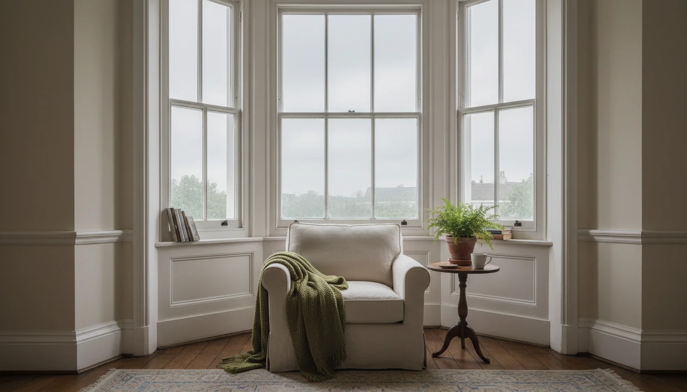
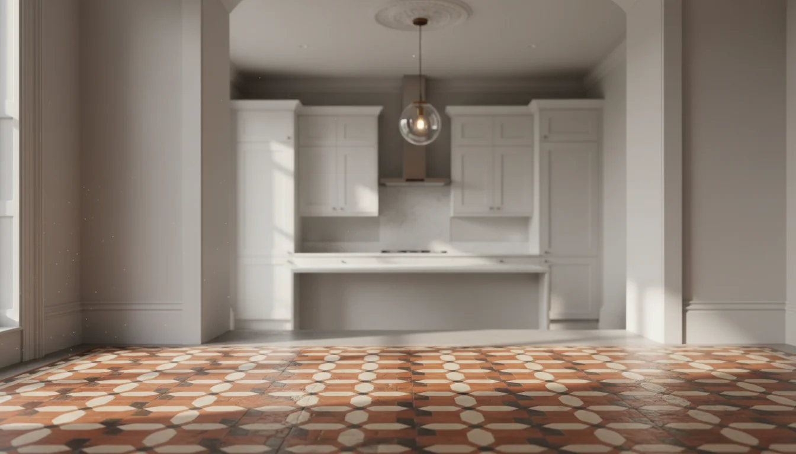

עיצוב בית בסגנון לונדוני - מה הופך בית בלונדון לבית לונדוני?
יש רגע שחוזר על עצמו בכל פרויקט. הלקוחה הישראלית נכנסת לדירה שקנתה ב- London, מסתכלת סביב, ואומרת: "יפה, אבל מרגיש אחרת." היא לא יודעת להסביר מה בדיוק. לא החושך - על זה כבר דיברנו. משהו אחר. משהו בפרופורציות, באור, בחומרים, בדרך שהחדר מרגיש גם גדול וגם מוקף. בדרך שהקירות מספרים משהו.
אחרי יותר מעשרים שנה של עיצוב בתים בלונדון, אני יכולה לתת שם לתחושה הזאת. זה סגנון לונדוני. ועיצוב בית בסגנון לונדוני הוא לא עניין של רהיטים או צבעים - זה שפה שלמה. ומי שלא לומד אותה לפני שמתחיל לשפץ - עושה טעויות יקרות.
פרופורציות - למה חדר בלונדון מרגיש אחרת
הדבר הראשון שמפתיע ישראלים בדירה לונדונית הוא התקרה. בבתים ויקטוריאניים גובה התקרה הוא בדרך כלל 2.7 עד 3 מטר. בחדרי קבלה ואולמות - מעל 3 מטר, ולפעמים הרבה מעבר. לשם השוואה, דירה חדשה בישראל - 2.5 מטר מינימום, 2.7 בממוצע.
| מאפיין | לונדון (ויקטוריאני) | ישראל (בנייה חדשה) |
|---|---|---|
| גובה תקרה | 2.7-3+ מטר | 2.5-2.7 מטר |
| כיוון בנייה | אנכי - חדרים גבוהים | אופקי - דירות רחבות |
| חלונות | גבוהים וצרים (sash/bay) | רחבים ונמוכים |
| פרופורציות | יחס מדויק רוחב-אורך-גובה | שטח מרבי, תקרה נמוכה |
אבל זה לא רק הגובה. זה היחס. הוויקטוריאנים תכננו חדרים עם פרופורציות מדויקות - יחס בין רוחב, אורך וגובה שגורם לחדר להרגיש מאוזן. לא ענקי, לא דחוס. מאוזן. חדר של 4 על 5 מטר עם תקרה של 3 מטר מרגיש אחרת לגמרי מאותו חדר עם תקרה של 2.5. והוויקטוריאנים ידעו את זה.
ואז יש את ה-bay window - החלון הבולט שיוצר גומחה, מכניס אור משלושה כיוונים, ומוסיף עומק לחדר בלי להגדיל את שטחו. ספה ב-bay window בבוקר חורפי, עם אור רך שנכנס מהצד - זו חוויה שאין לה מקבילה בדירה ישראלית.
בישראל הבנייה אופקית. דירות רחבות, תקרות נמוכות, חלונות רחבים. בלונדון הכל אנכי. סגנון ויקטוריאני אומר חדרים גבוהים, חלונות גבוהים, אור שנופל מלמעלה. וכשמבינים את זה - מבינים למה אי אפשר פשוט "לעשות כמו בבית." הפרופורציות מכתיבות עיצוב אחר. גם כשמתחילים לתכנן שיפוץ - הפרופורציות הן נקודת ההתחלה.
אור - לעצב סביב האפור, לא נגדו

הטעות הכי נפוצה שישראלים עושים בלונדון? נלחמים באור. שמים קירות לבנים, ספוטים בתקרה, וגורמים לדירה להיראות כמו משרד. כי בישראל לבן ואור חזק זה מה שעובד. בלונדון - זה לא.
האור בלונדון אפור, רך, עוטף. ה-sash windows - חלונות ההזזה האנכיים - מסננים אותו בצורה מסוימת. הם גבוהים וצרים, בנויים לתת אור מבוקר, לא הצפה. וחדר שפונה צפונה? בישראל זה גזר דין. בלונדון זה אור עקבי, שטוח, ציורי. מעצבי פנים בריטיים מתים על חדרים שפונים צפונה.
ואם עושים את זה נכון, קורה משהו מעניין. החדר לא רק נראה חם ועשיר - הוא מרגיש אינטימי. האור הלונדוני יוצר אווירה שאור ישראלי חזק לא יכול. ערב חורפי עם מנורה אחת דולקת, אור שמסתנן דרך sash window - זה רגע שלא קיים בדירה בהרצליה.
חומרים - עיצוב בית בסגנון לונדוני מתחיל בלבנים ובעץ
בישראל הכל חלק. טיח, שיש, פורצלן. קווים נקיים, משטחים אחידים. קל לנקות, קל לתחזק. בלונדון? שכבות. London stock brick מבחוץ - הלבנים הצהבהבות האופייניות שנולדו מתקנות הבנייה אחרי השריפה הגדולה של 1666. עץ מבפנים. רצפות פרקט מקוריות, פנלים בקירות, מעקות ומדרגות מעץ.
והחומרים האלה לא שם למראה בלבד. הם מספרים סיפור. כל שריטה בפרקט, כל סדק בלבנה - מאה וחמישים שנה של חיים. פרקט ויקטוריאני מקורי שווה יותר מכל שיש שתשימו במקומו - גם כלכלית וגם אסתטית. סוכני נדל"ן בלונדון יגידו לכם: original floorboards מעלים ערך. שיש חדש? לא. ובניגוד לשיש הישראלי, שנראה אותו דבר ביום הראשון וביום האלף, עץ ואבן מתיישנים. הם מקבלים אופי, שריטות, צבע שמשתנה. בלונדון קוראים לזה patina. בישראל קוראים לזה ישן.
ישן מול חדש - השיחה שמגדירה בית לונדוני

זו אולי התכונה הכי מגדירה של עיצוב בית בסגנון לונדוני: השיחה בין ישן לחדש. מטבח מודרני מאחורי חזית ויקטוריאנית. אמנות עכשווית מתחת ל-ceiling rose מקורית. רהיט פשוט ומודרני בחדר עם period features מהמאה ה-19.
 מה זה period features ולמה זה משפיע על המחירperiod features הסבר - מה המאפיינים הויקטוריאניים שמעלים את מחיר הנכס בלונדון, למה אסור להוריד אותם, ואיך לעבוד איתם בשיפוץ בלי להרוס את הערך.
מה זה period features ולמה זה משפיע על המחירperiod features הסבר - מה המאפיינים הויקטוריאניים שמעלים את מחיר הנכס בלונדון, למה אסור להוריד אותם, ואיך לעבוד איתם בשיפוץ בלי להרוס את הערך.
זו לא סתירה. ככה זה עובד פה. הבתים הכי מוצלחים בלונדון הם אלה שלא מנסים להיות דבר אחד. הם לא "ויקטוריאניים" ולא "מודרניים." הם שיחה בין תקופות.
הבריטים לא שואלים "מה אפשר לשנות." הם שואלים "מה אפשר לשמר." זה הבדל שמשנה הכל.
בפרויקט שעשיתי ב- East Finchley, מצאנו רצפת אריחים מקורית מתחת לשטיח. אריחים ויקטוריאניים, שלמים, עם דגמים מדהימים. הלקוחה רצתה לשים פורצלן. שכנעתי אותה לשקם. שיקמנו את האריחים, הוספנו גוף תאורה מודרני שמשתלב עם עבודת הגבס בתקרה - והתוצאה הייתה כניסה שלא מפסיקה לקבל מחמאות. זה שילוב ישן וחדש בעיצוב פנים כמו שלונדון יודעת לעשות.
ואם הנכס שלכם הוא מבנה לשימור או ב- conservation area - אתם בכלל לא יכולים להחליף מה שאתם רוצים. אז עדיף לאהוב את מה שיש. ובכל מקרה, לפני שנוגעים בקיר - כדאי לדעת מה מותר ומה לא.
ריסון - למה פחות עובד יותר בלונדון
זה אולי הדבר הכי קשה לישראלים. אנחנו אוהבים הרבה. הרבה צבעים, הרבה חומרים, הרבה פריטים, הרבה אנרגיה. הסלון הישראלי מדבר בקול רם.
בלונדון הבית מדבר בשקט. פריט אחד חזק - אח מקורית, נברשת, יצירת אמנות - והשאר נסוג. לא מינימליזם. ריסון. הבניין עצמו הוא ה-statement. התקרה הגבוהה, הקרניז, ה-picture rail, ה-sash windows - כל אלה כבר עושים את העבודה. מה שנשאר לכם זה לא להתחרות בהם.
וזה אולי נשמע כמו ויתור, אבל בפועל זו יוקרה. הבתים הכי יקרים בלונדון הם לרוב הכי מרוסנים. כי ריסון דורש ביטחון. ביטחון בבחירה, ביטחון בחומרים, ביטחון שהבניין מדבר בשם עצמו.
תיכנסו לבתים בהמפסטד או בסאות׳ קנזינגטון - הדירות שעולות מיליונים. תראו מה יש בפנים. לא הרבה. ספה טובה, שולחן נכון, אור נכון, וכל השאר - הבניין. זה נראה פשוט. זה לא פשוט בכלל. זה שנים של לדעת מה לא לשים.
אז מה עושים עם כל זה
לפני שמתחילים לתכנן שיפוץ - לומדים לראות. נכנסים לדירה, מסתכלים למעלה, שמים לב לגובה התקרה, ליחס בין החלון לקיר, לרצפה המקורית. מבינים מה הבניין מנסה להגיד.
ואז שומרים. שומרים את הקרניזים, את האח, את הפרקט, את ה-ceiling rose. כל מה שמקורי ובמצב סביר - נשאר. את המטבח ואת חדרי הרחצה אפשר לחדש. את האופי של הבית - לא.
ואיך מכניסים חמימות ישראלית בלי לאבד את האופי הלונדוני?
- חומרים חמים - עץ, טקסטיל, נחושת, קרמיקה בעבודת יד
- צבעים עמוקים - לא לבן מעקר אלא גוונים שנותנים לאור הלונדוני מה לעבוד איתו
- ריהוט שמכבד את החלל - לא ממלא אותו
- שולחן אוכל מעץ מלא מתחת לנברשת, שטיח פרסי על פרקט מקורי, כורסה אחת טובה ליד האח
ובעיקר - בלקבל שהדירה בלונדון היא לא הדירה בתל אביב. וזה בדיוק מה שעושה אותה שווה.
כשהמשפחה מגיעה לקיץ, הילדים רצים על פרקט מקורי, ארוחת שישי היא מתחת ל-ceiling rose, וערבי הקיץ הם בגינה. הדירה לא צריכה להיראות כמו הבית בהרצליה כדי להרגיש כמו בית. היא צריכה להרגיש כמו לונדון. כי בשביל זה קניתם אותה.
הסגנון הלונדוני הוא לא מכשול - הוא הרקע. וכשעובדים עם מישהי שמכירה את שני העולמות, הרקע הזה הופך לבית.
רוצים לראות איך זה נראה בפרויקט אמיתי? זה מה שאני עושה.
- הפרופורציות הן הבסיס - תקרות של 2.7-3 מטר, bay windows, יחסי חדר מאוזנים. אי אפשר "לעשות כמו בבית" כשהבניין מדבר שפה אחרת
- האור הלונדוני הוא לא האויב - הוא הנכס. גוונים חמים ושכבות תאורה, לא קירות לבנים וספוטים
- חומרים מקוריים שווים יותר מכל החלפה - פרקט ויקטוריאני, אריחים, London stock brick. בלונדון patina הוא ערך, לא פגם
- שילוב ישן וחדש הוא המהות של עיצוב לונדוני - לא ויקטוריאני טהור, לא מודרני טהור, אלא שיחה בין תקופות
- ריסון הוא יוקרה - הבניין עצמו הוא ה-statement. תנו לתקרה, לקרניז ולפרקט לדבר